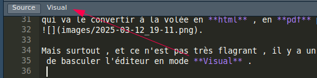
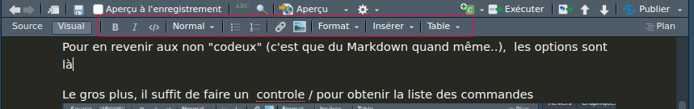
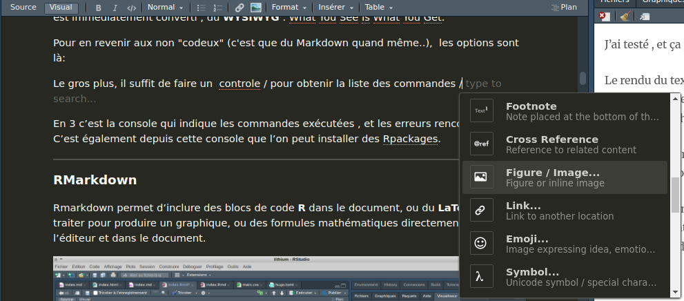
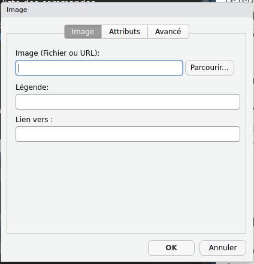
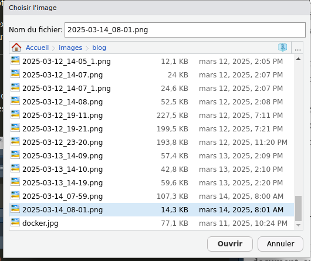
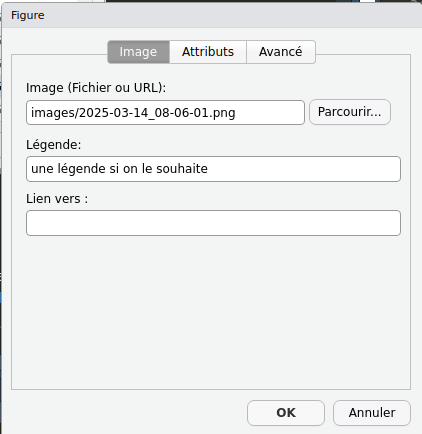
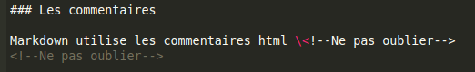

L’IDE scientifique couteau suisse
Présentation
Rstudio est un IDE , orienté exploitation de données , il est en particulier utilisé dans le domaine scientifique . Il est capable de se connecter à des bases de données, de gérer Git, se connecter à github.
Il a sa console R , un terminal, un navigateur de fichier, et toute une série d’outils destiné à produire de la documentation élégante.
Il est maintenu par posit.co.
Fonctionnalités
Visual RMarkdown
C’est la clef de l’IDE. Il envoie le document des son enregistrement à pandoc qui va le convertir à la volée en .html , en .pdf pour l’afficher.
Dans le cas présent , j’utilise le packages blogdown qui fait tourner un moteur de blog écrit en go , et suivant la commande envoyée; soit il me produit le site en local en ré écrivant les entêtes des pages .html pour résoudre les liens en local.
Sinon les liens vont dehors vers le vrai site en production. On début ça surprend , quand on n’a pas saisi le workflow.
Ce n’est pas très flagrant , il y a un petit bouton qui permet de basculer l’éditeur en mode Visual .

⚠️ Ne passez pas d’un mode d’édition à un autre ,le code déjà édité en mode source risque de casser en mode visual , choisissez l’un ou l’autre, ça m’a cassé plein de syntaxes imbriquées.
J’ai testé c’est sympa, et ça pourrait séduire les adeptes de la souris, et doucement les faire glisser vers l’édition textuelle .
En mode visual le rendu du texte est en direct , on peut toujours taper du Markdown, celui ci est immédiatement converti , c’est du WYSIWYG : What You See Is What You Get.
Pour en revenir aux non “codeux” (c’est que du Markdown quand même..), les options sont là, accessibles à la souris .

Le gros plus, il suffit de faire un controle / pour obtenir la liste des commandes , et l’insertion d’images est peut être la seule commande qui m’intéresse . Le code n’est pas compliqué en soit  mais il faut connaitre le chemin, et surtout le nom de l’image.
Un panneau s’ouvre

On navigue dans ses dossiers pour choir l’image à insérer.

On lui met une légende, si on le souhaite

En 3 c’est la console qui indique les commandes exécutées , et les erreurs rencontrées. C’est également depuis cette console que l’on peut installer des Rpackages.
RMarkdown
L’extension .Rmarkdown ou .Rmd; permettent d’inclure des blocs de code R dans le document, ou du LaTex et de le traiter pour produire un graphique, ou des formules mathématiques directement dans l’éditeur et dans le document.

Mais ne tentez pas de faire du R dans du Markdown , utilisez seulement RMarkdown. 
Malheureusement , j’ai commencé à éditer en Markdown , je ne pourrais pas faire la démonstration dans cet article.
R
Déjà traité dans une série d’articles
LaTex
Le Tex , et sa version dédiée aux mathématiques le LaTex est très utilisé en milieu universitaire , pour produire de belles documentation.
LaTex permet en particulier d’insérer des formules mathématiques du plus joli effet.
Le LaTex dans le Markdown fera l’objet d’un article ultérieurement.
Markdown
Bref historique
Le Markdown est un langage de balisage léger, dont les premières implémentations remontent à 2004; par John Gruber en collaboration avec Aaron Swartz, sur la base du projet atx d’Aaron Source wikipédia.
Vers 2012-2014 avec github , la pratique du versionning de code s’est imposé , la culture de la documentation et du wiki aussi : ce qui est une bonne chose .
L’utilisation du markdown a séduit les informaticiens, sa syntaxe difficile simplicime, le rend très accessible.
-
Insertion de code
Un effet sympa du Markdown est que l’on peu insérer du code in line <h2 style="color:crimson;">Titre niveau 2</h2>, grâce au caractère d’échappement ``, qui est l’accent grave , obtenu avec la combinaison de touche alt-grp 7 . Il faut placer son code entre 2 accents. Car si le code n’est pas échappé, il sera interprété directement
-
Échappement du caractère d’échappement
Il faut à mon tour que j’échappe le caractère d’échappement pour vous montrer à quoi ressemble l’insertion de blocs de codes.
De cette manière
\`\`\`langage
\`\`\`
Les blocs de codes permettent la coloration syntaxique, il suffit d’indiquer le langage au début du bloc.
-
md
```md
# Titre de niveau 1
## Titre de niveau 2
```
# Titre de niveau 1
## Titre de niveau 2
-
yml
```yml
volumes:
nextcloud:
db:
services:
db:
image: mariadb:10.6
restart: always
command: --transaction-isolation=READ-COMMITTED --log-bin=binlog --binlog-format=ROW
volumes:
- db:/var/lib/mysql
environment:
- MYSQL_ROOT_PASSWORD=P@ssw0rdC0mpliqu3
- MYSQL_PASSWORD=changeme
- MYSQL_DATABASE=nextcloud
- MYSQL_USER=nextcloud
volumes:
nextcloud:
db:
```
volumes:
nextcloud:
db:
services:
db:
image: mariadb:10.6
restart: always
command: --transaction-isolation=READ-COMMITTED --log-bin=binlog --binlog-format=ROW
volumes:
- db:/var/lib/mysql
environment:
- MYSQL_ROOT_PASSWORD=P@ssw0rdC0mpliqu3
- MYSQL_PASSWORD=changeme
- MYSQL_DATABASE=nextcloud
- MYSQL_USER=nextcloud
volumes:
nextcloud:
db:
```bash
```
-
html
```html
<!DOCTYPE html>
<html lang="fr-FR">
<head><script src="/blogdown/livereload.js?mindelay=10&v=2&port=4321&path=blogdown/livereload" data-no-instant defer></script>
<meta charset="utf-8">
<meta name="viewport" content="width=device-width, initial-scale=1.0">
<meta name="generator" content="Hugo 0.145.0">
<title>Les ordinateurs, les autres et moi</title>
<meta property="og:title" content="Les ordinateurs, les autres et moi">
<meta property="og:type" content="website">
```
<!DOCTYPE html>
<html lang="fr-FR">
<head><script src="/blogdown/livereload.js?mindelay=10&v=2&port=4321&path=blogdown/livereload" data-no-instant defer></script>
<meta charset="utf-8">
<meta name="viewport" content="width=device-width, initial-scale=1.0">
<meta name="generator" content="Hugo 0.145.0">
<title>Les ordinateurs, les autres et moi</title>
<meta property="og:title" content="Les ordinateurs, les autres et moi">
<meta property="og:type" content="website">
-
Les niveaux de titre
# Titre 1
## Titre 2
### Titre 3
-
Titre avec du code html
Le markdown traite très bien le code html, il a été pensé pour que les balises correspondent.
<h2 style="color:red;">Titre niveau 2</h2>
Titre niveau 2
Si ce rouge est trop criard , il existe 140 couleurs.
<h2 style="color:crimson;">Titre niveau 2</h2>
<h3 style="color:IndianRed;">Titre niveau 3</h3>
Titre niveau 2
Titre niveau 3
Supporte également le code hexadécimal des couleurs
Fonctionne pour un <a style="color:#483D8B;">mot</a> dans une phrase.
Fonctionne pour un mot dans une phrase. Je découvre que ça me permet de souligner un mot , et de lui mettre une sur-brillance: classe.
-
Les commentaires
Markdown utilise les commentaires html <!–Ne pas oublier–>

-
Les emphases
* un astérisque pour un ou plusieurs mots en *italique*
* un unerscore encore pour un ou plusieurs mot en _italique_
* 2 astérisques pour un mot en gras **gras**
* 2 underscore pour un ou plusieurs mots __encore en gras__
* le tidle ~ pour barrer un mot ~barré~
- un astérisque pour un ou plusieurs mots en italique
- un unerscore encore pour un ou plusieurs mot en italique
- 2 astérisques pour un mot en gras gras
- 2 underscore pour un ou plusieurs mots encore en gras
- le tidle ~ pour barrer un mot
barré
-
Les listes
* liste à point
* liste à point
* sous liste
1. liste numérotée
2. liste numérotée
- liste à point
- liste à point
- sous liste
- liste numérotée
- liste numérotée
-
Les tâches
* [x] blogdown::serve_site()
* [ ] Corriger les fautes d'orthographes
* [x] Corriger les syntaxes
* [ ] blogdown::stop_server()
* [ ] blogdown::build_site()
* [ ] ssh-add ~/.ssh/ma_clé_privé
* [ ] git status
* [ ] git add *
* [ ] git commit -m "MaJ du site"
* [ ] git push --set-upstream origin main
-
blogdown::serve_site()
-
Corriger les fautes d’orthographes
-
Corriger les syntaxes
-
blogdown::stop_server()
-
blogdown::build_site()
-
ssh-add ~/.ssh/ma_clé_privé
-
git status
-
git add *
-
git commit -m “MaJ du site”
-
git push –set-upstream origin main
-
Les encarts
> Ceci est un encart
>> encore plus encarté
Ceci est un encart
encore plus encarté
-
Ligne séparatrice
3 underscore ___
ou 3 tirets ---
ou 3 ticks ```
blogdown Générateur de blog
Yihui Xie créatrice du template hugo-lithium travaillait pour posit.co.
Elle a développé à priori en partie Rstudio , et a créé le package blogdown , et plusieurs autres, ce package exploite hugo le moteur de blog écrit en go . Yihui annonce son départ après 10 ans chez posit.
Workflow
Je profite d’avoir fait les listes de tâches pour noter le workflow ici. Je n’avais pas bien lu la documentation, et au début je poussais les fichiers .html issu de la version locale, et quand le serveur tourne encore , et que l’on voit localhost dans le navigateur ça surprend ….
* [x] blogdown::serve_site()
* [ ] Corriger les fautes d'orthographes
* [x] Corriger les syntaxes
* [ ] blogdown::stop_server()
* [ ] blogdown::build_site()
* [ ] ssh-add ~/.ssh/ma_clé_privé
* [ ] git status
* [ ] git add *
* [ ] git commit -m "MaJ du site"
* [ ] git push --set-upstream origin main